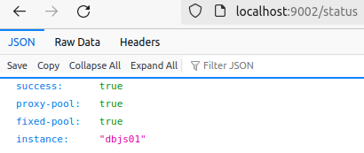

Press button to get OpenRestDB service status.
Expected resonse:

$ curl --silent --data '' http://localhost:9002/status { "success": true, "proxy-pool": true, "fixed-pool": true, "instance": "dbjs01" }
OpenRestDB